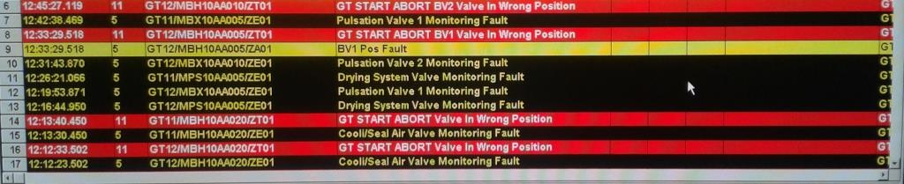
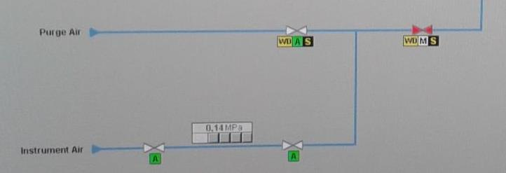
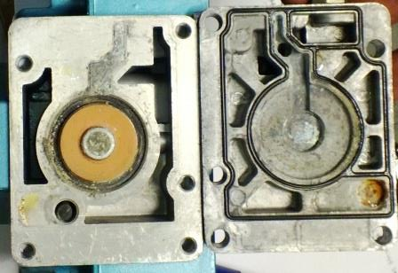

SGT-800: эксплуатация вспомогательного и навесного оборудования
SGT-800: эксплуатация вспомогательного и навесного оборудования
Типичные последствия неисправностей в системе воздуха КИП
К типичным последствиям неисправностей системы воздуха КИП относятся:
- автоматическая разгрузка с последующим остановом газотурбинного двигателя;
- отказ очистки системы измерения пульсации (MBX);
- отказ элементов продувки трубопроводов и сопел после очистки компрессора;
- отказ работы клапана MPS системы предотвращения коррозии в газовой турбине в периоды простоя путем поддержания низкой относительной влажности во внутренних частях газовой турбины.
Наиболее опасными последствиями являются отказы в работе адсорбционного осушителя QFA10AT015/AT020.
Последствия отказов в работе адсорбционного осушителя K-MT 8 и их идентификация
Идентификация неисправностей производится средствами сообщений WinCC операторских станций
На конкретных HMI-кадрах, например, клапаны системы измерения пульсации (MBX).
При появлении сигналов о неисправности рекомендую выполнить следующий алгоритм (получен опытным путем):
- На входном фильтре-регуляторе клапана MBH10AA005/010 приоткрыть на 1-1,5 оборота сбросной кран.
- Выходящий воздух проверить на наличие влаги.
- Если влага в наличии, то возможны два пути поиска происхождения влаги:
- Проверить температуру наружного воздуха в контейнере QFA, машинного зала и КШТ.
- Проверить работу адсорбционного осушителя QFA10AT015/AT020.
- Иначе - продолжаем поиск источника неисправности.
Последствия появления влаги в воздухе КИП
При появлении влаги в воздухе КИП происходит физическое разрушение механизмов.
Пример последствий появления влаги в системе воздуха КИП. Кроме следов коррозии можно выделить соляной налет, который образуется не только от влажности с высоким показателем жесткости, но и также от последствий проникновения фракций компрессированного смазочного масла, поднимающего показатель кислотности рабочей среды.